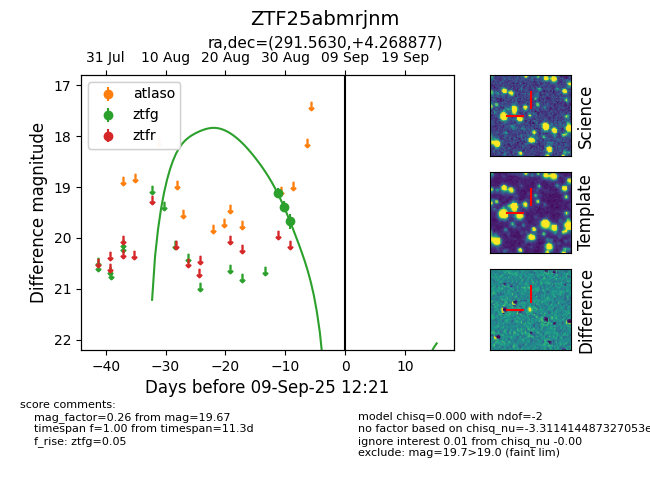

FINK: ZTF25abmrjnm
Lasair: ZTF25abmrjnm
ALeRCE: ZTF25abmrjnm
ZTF25abmrjnm (ztf,fink)
equatorial (ra, dec) = (291.5630,+4.26888)
galactic (l, b) = (40.7335,-5.75983)

last ztfg=19.67
3 ztfg detections